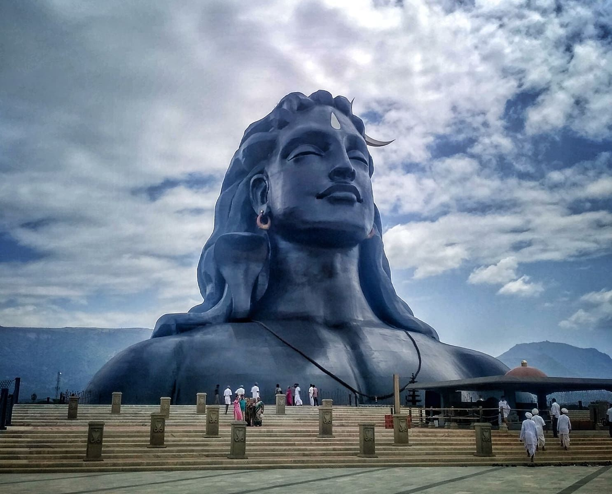
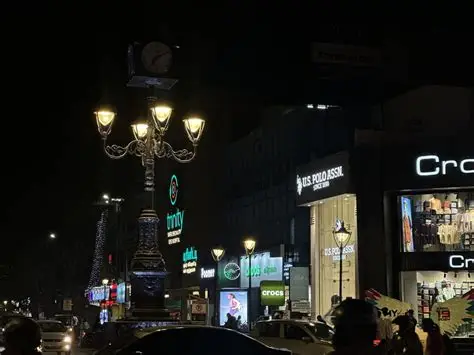
RS Puram, Coimbatore
Coimbatore · Tamil Naduவணக்கம் கோவை
At the foot of the Western Ghats.
Where cool mountain breezes meet bustling city life, and tradition blends gently with modern charm — begin your journey here.
Places to visit
Explore beautiful places
6 favourites from 21 places across the district
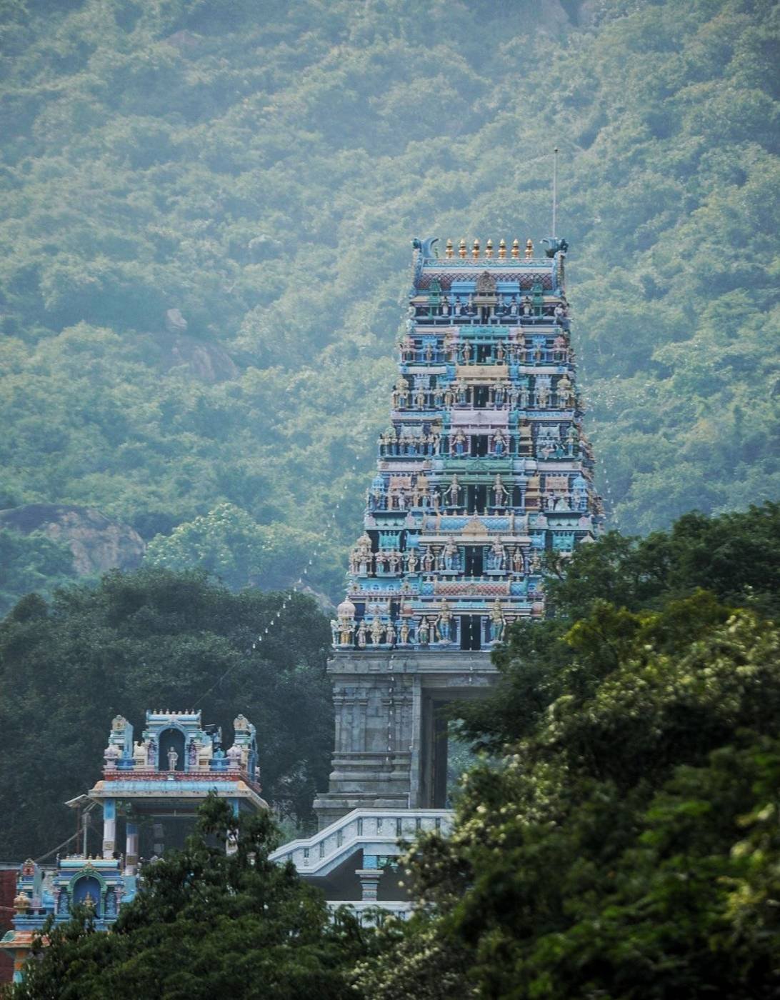
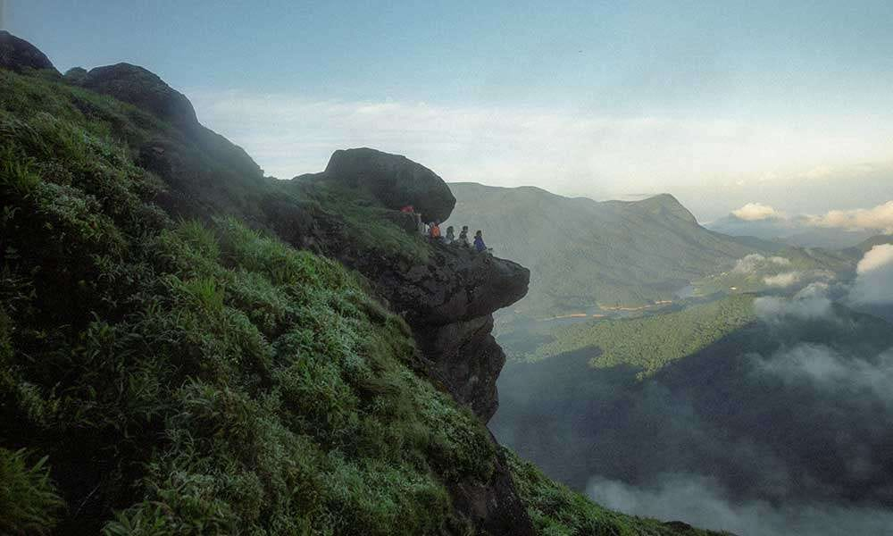
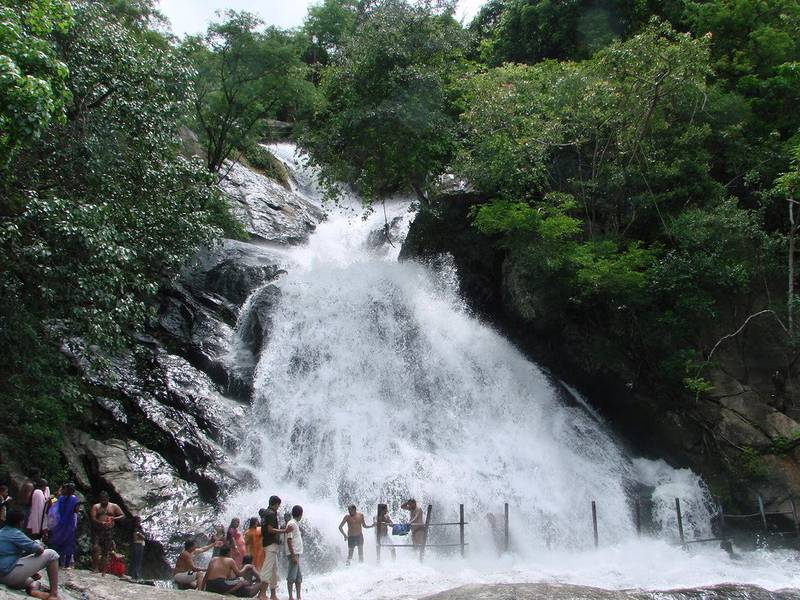
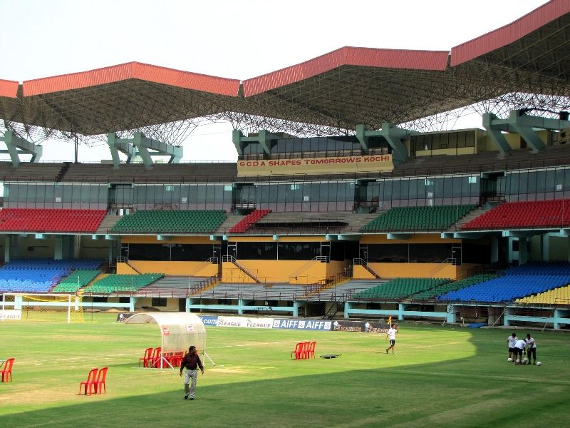
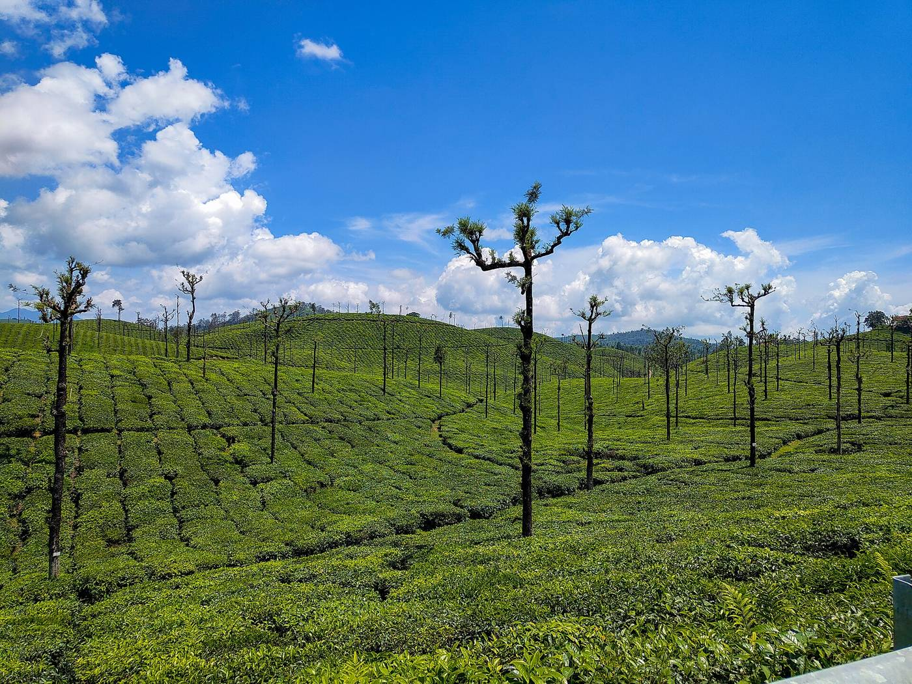
Photo: Kkdi63, CC BY-SA 4.0In the city
Featured destinations
Experience the most iconic and breathtaking travel spots.
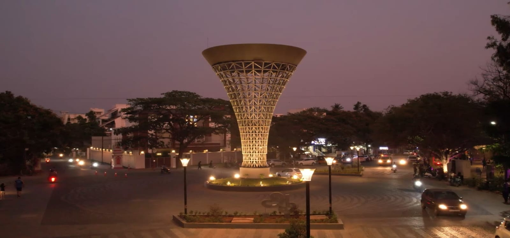
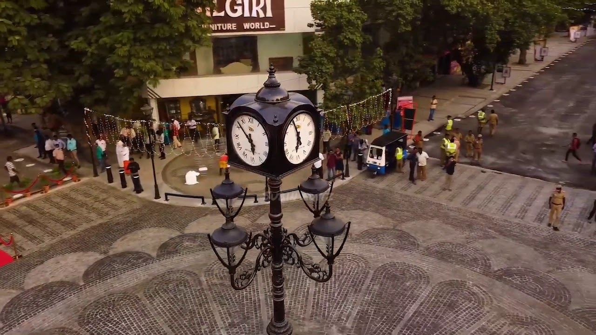
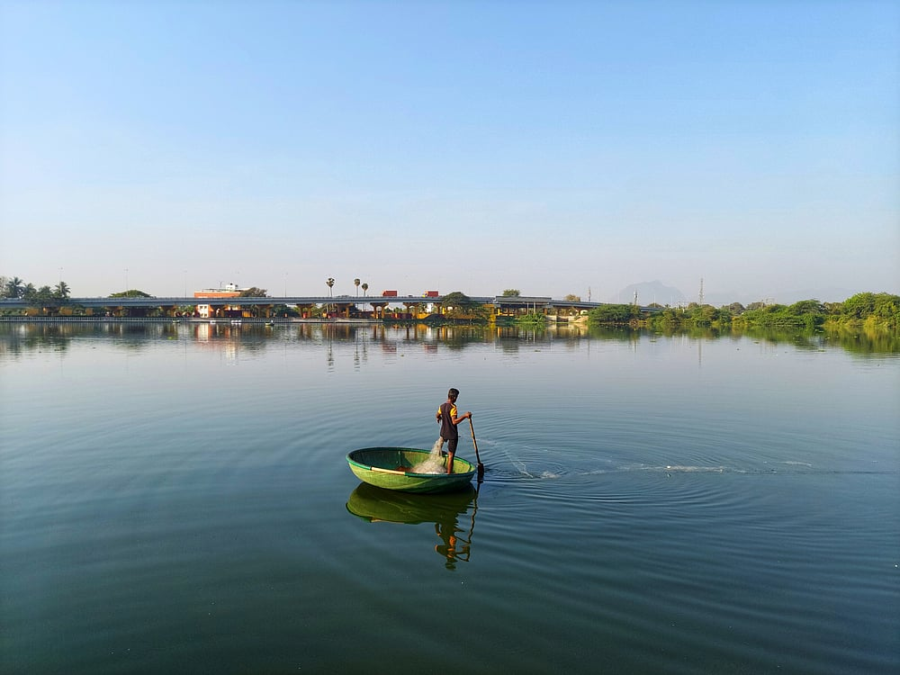
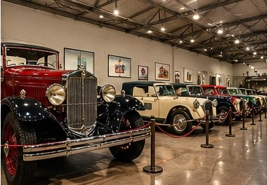
Representative image
Park & walk
Race Course
A green and clean oasis in the heart of Coimbatore city.
Coimbatore city
Food of Kongu Nadu
What to bite?
Six dishes Coimbatore is known for. Tap “More” on any dish to see where to find it.
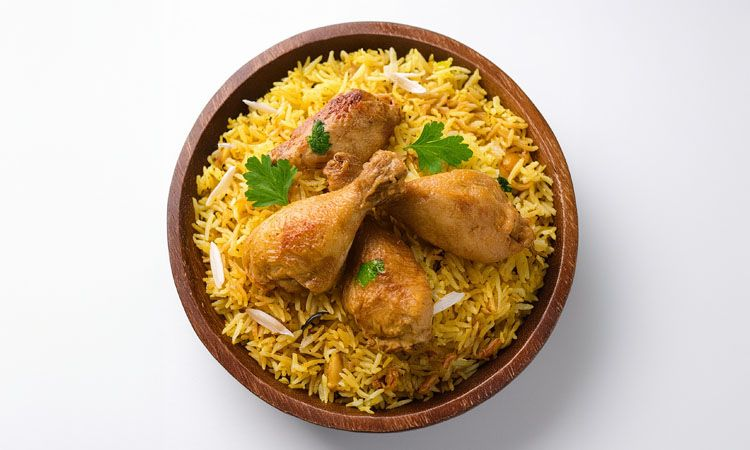
Kongu specialKongunadu Biryani
A milder, pale biryani made with short-grained seeraga samba rice and chicken or mutton.
Non-vegMore
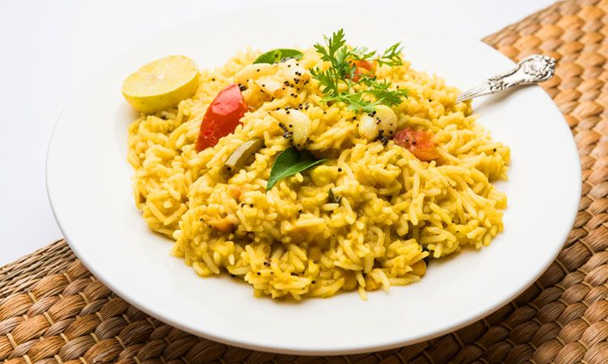
Kongu stapleArisi Paruppu Sadam
A one-pot meal of rice and toor dal, tempered with onion, mustard seeds and garlic.
VegMore
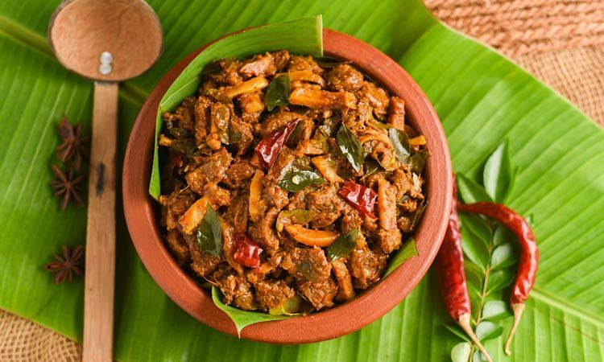
Kongu specialPallipalayam Chicken
Unmarinated chicken fried in very little oil with shallots, coconut and chillies.
Non-vegMore
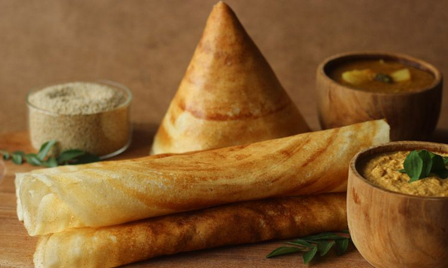
Breakfast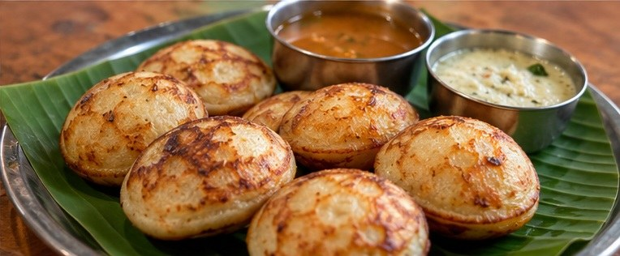
Breakfast & tea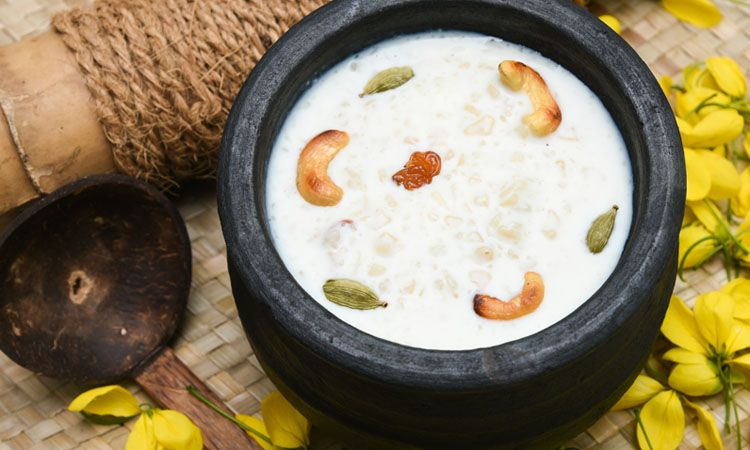
DessertAdventures & hotspots
Pick your thrill
From an easy forest day to a seven-hill climb. Open a panel to see where, when and what to know.
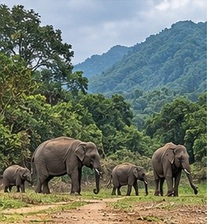
Representative imageEasyour rating
Topslip forests
Into the Anamalai Tiger Reserve for forest, birds and, with luck, wildlife.
- Where
- Topslip, about 12 km past the Anamalai forest check post near Pollachi
- When
- Check post open 7 am – 4 pm for day visitors (as reported; check current timings)
- Good to know
- Overnight stays must be booked and camping isn't allowed. The jeep safari most visitors describe is at Parambikulam, across the Kerala border.
Sources: eNidhi travel blog (2018)
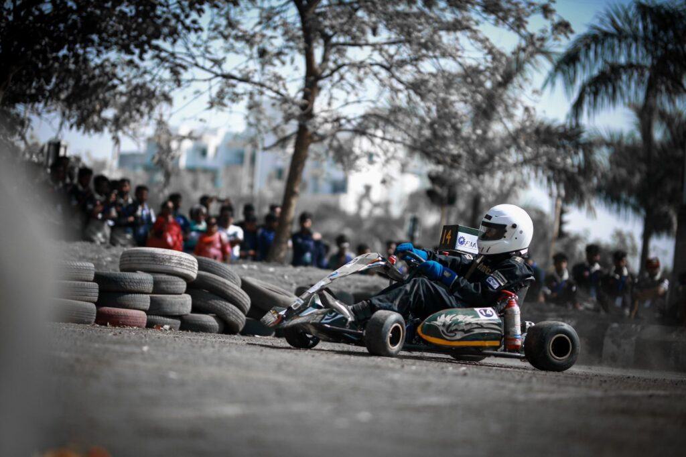
Representative photoEasy–moderateour rating
Go karting
Coimbatore is often called India’s motorsport capital. Try a kart on a real circuit.
- Where
- Coastt Kartmania, Karumathampatti
- The track
- 1,012 m, run anticlockwise. Rental karts for every skill level.
- Good to know
- Under-18s renting without a parent or guardian present need a signed consent form.
Sources: IAME track listing
Tea estates near Valparai
Challengingour rating
Valparai ghat ride
Forty hairpin bends from the Aliyar foothills up into the tea country.
- Where
- Aliyar → Valparai ghat road, via Monkey Falls
- The climb
- 40 hairpin bends to Valparai, about 1,060 m above sea level
- Stay safe
- Narrow road shared with buses. Elephants cross forest stretches, so don't stop inside the forest. Entry is restricted after 6 pm.
Sources: Wikipedia: Valparai · Onmanorama safety guide · Photo: Kkdi63, CC BY-SA 4.0
Velliangiri hills
Strenuousour rating
Vellaingiri trek
A pilgrim climb over seven hills, often called the Kailash of South India.
- Where
- Starts at the Vellingiri Andavar temple, at the foot of the hills
- When
- Mid-February to May only. The forest department closes it the rest of the year.
- Stay safe
- Seven hills rising to about 1,840 m. People with BP, diabetes, asthma, breathing problems or epilepsy are barred, and climbing is limited to boys and men aged 10–60. Doctors at the base camp check climbers.
Sources: Wikipedia: Velliangiri Mountains · The News Minute
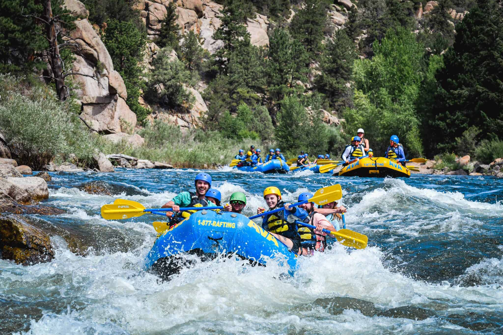
Representative photoNot verifiedour rating
Rafting on Bhavani River
On the original site. We couldn't confirm an operator yet.
- Status
- We couldn't find a rafting operator on the Bhavani near Coimbatore in published sources.
- Before you go
- Check locally before planning this. If it isn't offered, we'll replace this panel.